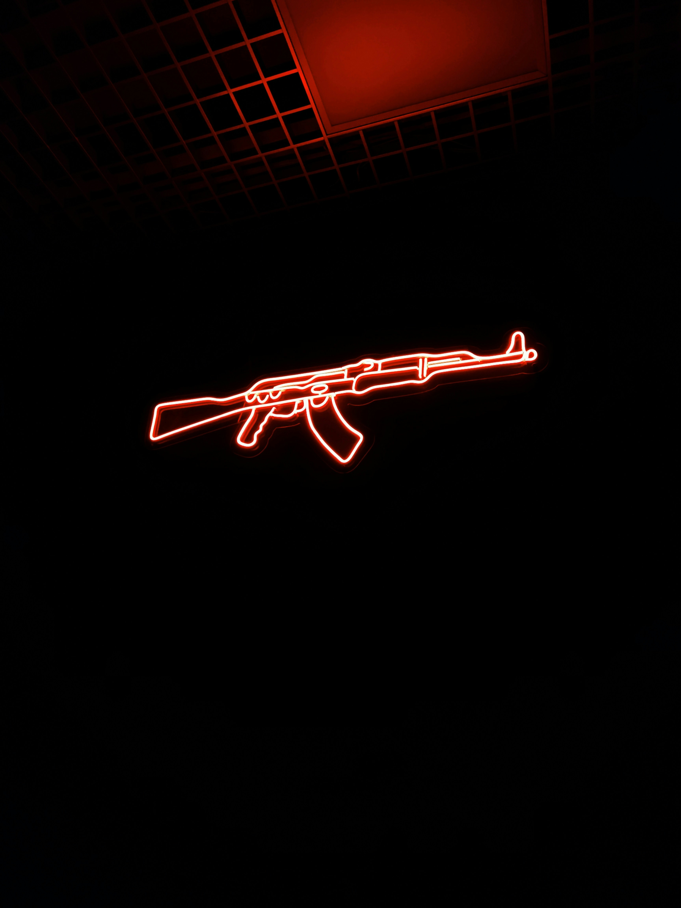

The AK-47 was chambered in the then newly developed Soviet 7.62x39mm round—an intermediate cartridge that took influence from the German 7.92x33mm Kurz round used in the StG-44.
This caliber was first used in the RPD and SKS.It was designed to be a compromise between the full-sized 7.62x54mmR rifle round and smaller 7.62x25mm Tokarev round used in pistols and submachine guns.
